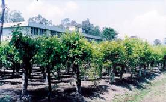
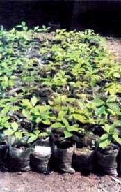
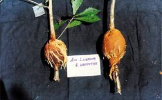
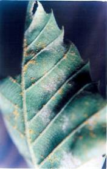
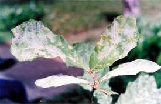
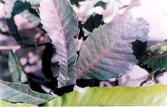
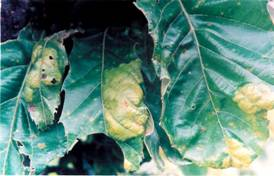
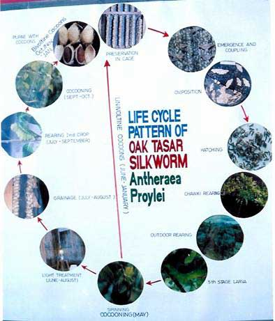
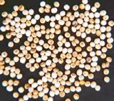
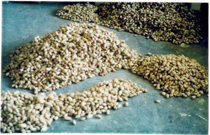

|
|
||||||||||||||||||||||||||||||||||||||||||||||||||||||||||
|
|
|
|||||||||||||||||||||||||||||||||||||||||||||||||||||||||
|
|
|
|||||||||||||||||||||||||||||||||||||||||||||||||||||||||
|
|
Introduction Tasar, tussore
or tussah is the silk produced by some wild species of silkworm belonging to
the family Saturniidae ( Arora & Gupta, 1979 ). Some of the important
species of Tasar silkworm which belong to the genus Antheraea are A. pernyi ( Oak tasar is
reported to be originated in The temperate tasar culture is confined only to the sub-himalayan oak belt comprising of Name of the species and synonyms: A.
Antheraea proylei Jolly: Antheraea proylei is a hybrid evolved by the
Scientists of Central Silk B. Antheraea frithii Mr: Antheraea frithii Mr ( n=31 )
is found distributed in the hilly
regions of North-eastern C. Antheraea roylei Moore:
Antheraea roylei (n=
30,31)is an endemic species found in the North-eastern and North-western sub-himalayan oak belt of India at an altitude of 1100 m to
1800 m AMSL. It forms a white coloured double
layered cocoon. This silkworm feeds on different Quercus species like Q. serrata, Q. incana, Q. dealbata, Castanopsis sp. etc. and apple leaves. D. Antheraea pernyi GM: Antheraea pernyi is an exogenous (Chinese)
species (n=49) and distributed from Amur to
southern F. PRP5: It is also an important breed of oak
tasar silkworm A. proylei
developed by the Regional Tasar Research Station, Central Silk Board, Imphal through selection from the segregating progenies
of the cross A. proylei x (
A. roylei x
A. proylei). PRP5 has shown
improvement of 18.60% in fecundity and 29.79% in filament length over A. proylei. Commercial
exploitation of this breed has been initiated through the extension centres of Regional Tasar Research Station, Central Silk
Board, Imphal. Taxonomic position: The systematic position of Oak tasar
silkworm is as follows: Phylum : Arthropoda Class : Insecta Sub-Class : Pterygota Order : Lepidoptera Family : Saturniidae Genus : Antheraea Species : frithii Geographical Distribution: Oak tasar silkworms are distributed in Sub-himalayan oak belt of Physiographic/Climatic
requirements: It can be reared with great success
within the temperature range of 200C to 280C and relative
humidity 70-80%. However, it can sustain the maximum temperature up to 300C
and minimum up to 150C and RH-40%. Natural
habitats: Sub-tropical and temperate rain forest
of sub-himalayan oak belt. Seasons of
natural occurrence:
|
|||||||||||||||||||||||||||||||||||||||||||||||||||||||||
|
|
Host Plant
Silkworm,
A. proylei J.
is extremely polyphagous and differs in its
adaptation to different food plants. The species recognized with preferred
host plants are given below.
Quercus (Oak) species belong to family Fagaceae, serve as host plants of oak (temperate) tasar
silkworms. They occur in temperate climate and form an important group of
trees in Europe, North America, India sub-continent, South east Asia, China
and Japan. According to some classifications, the genus Quercus comprises of more than 300 species in temperate and subtropical
region of the world (Hooker 1888). In  about 35 well known species of Quercus are distributed all along the North-western sub-Himalayan range at 1200-3500 m ASL and in the North-Eastern region at 600-1800 m ASL. However out of 35, only 15 major oak species are available in nearly 1841500 hectares and of these only seven species viz. Q. serrata, Q. semiserrata, Q. dealbata (syn. Lithocarpus dealbata), Q. incana (syn. Q. leucotrichophra), Q. semicarpifolia, Q. himalayana (syn. Q. floribunda) and Q. grifithii can be exploited in both North-West and North-East region for oak tasar cultivation. InAvailability of Oak Flora in North
Eastern Region: A brief account of availability of oak flora and their
coverage in North-Eastern region is given below: I) Manipur:
Only 20000 hectares out of 40,000 hectares of available oak flora
mainly confined to hills is easily exploitable. Q. serrata and Q. dealbata grow luxuriantly in mixed
populations up to 5500 feet ASL. Q. serrata is the most suitable species for silkworm
rearing in Manipur. II) Nagaland: The oak flora is mainly confined to Chakesang
region and Twensang district. The species available
are Q. acutissima,
Q. grifithii, Q. lineate and Q. lamellose. Out of which Q. acutissima,
Q. dealbata and Q. grifithii are being used for oak
tasar rearing up to the altitude of 2000 to 6000 ASL. III) IV) Meghalaya: Out of 23,000 hectares
oak flora only 500 hectares is exploitable. The species available are Q. acutissima
and Q. dealbata
upto 2000-6000 ASL. V) Mizoram: Oak is confined in Lunglei and Champhai region
only where about 15,000 hectares are occupied by Q. serrata, Q. grifithii and Q. dealbata .
Natural Vegetation of Q. semicarpifolia
and
Q. semiserrata
has been found growing in Pherpak in VI) Arunachal Pradesh: Nearly 12,25,000 hectares of land is under oak plantation and the
oak species available are Q. semicarpifolia, Q. dealbata, Q.
grifithii, Q. lamelosa,
Q. lanuginose, Q. lincata, Q. kamroopi
and Q. acutissima
out of which Q. semicarpifolia,
Q. dealbata, Q. acutissima
and Q. grifithii
can be utilized for oak tasar cultivation in 5,000 hectares of land. Table-1:
Availability of oak species in North - Eastern states and their
exploitation for tasar rearing.
PACKAGE
AND PRACTICES OF OAK CULTIVATION: Quercus serrata, Q. griffithii and
Lithocarpus dealbata
are the host plants of oak tasar silkworm Antheraea proylei. Among these, Quercus serrata is
considered as the best food plant for oak tasar silkworm rearing as well as
for production of quality yarn. The techniques detailed below should be
adopted for raising of healthy oak seedlings,
transplantation in the field, further maintenance and pruning of trees for
silkworm rearing. 1. Raising of Oak Seedlings: Ø
Ripe and mature
seeds should be collected within the month of October/November and healthy
seeds are selected. Ø Healthy seeds should be stored in gunny bags in dry condition till February-March. Nuvan @7 ml/litre may be sprayed on seeds before their storage for protecting them from insects pests.  Ø
During
March-April, seed viability should be tested by floating them in water.
Sunken seeds are selected for sowing and they should be soaked in water for
2-3 days. Ø
Two parts
of sand and one part of compost should be applied to seedling bed and
thoroughly mixed with soil. The seed should be sown at a depth of ½ inch.
Seed bed should be covered with thin layer of thatch grass and irrigated with
rose can regularly. Ø
The
germinating seeds may be sorted out and directly sown in polythene bag
(4x9). Two selected seeds should be sown in one polythene bag filled with a
mixture of sand, soil and FYM in 1:1:1 ratio and watered regularly. The
seedlings attain a height of 9-11 inches within 90 days of sowing. 2. Transplantation of Seedlings and
maintenance of Ø
6,724
Seedlings should be transplanted per hectare in a well prepared site either
at gentle sloppy hill. Seedling may be transplanted at 4 x4 spacing in the
pits of 1 x1 x1 size. In the farmers field/forest land 2988 seedlings/ha. should be transplanted at 6 x 6 (2m x 2m) spacing. Ø
10 g. Urea
and 5 g. Mussorie-phos or 10 g. Single super phosphate should be applied to every plant before onset of
the monsoon by ring method for healthy and speedy growth of the plants during
initial two years. Ø
3-4 year
old plants may be applied fertilizers @ 20 g. urea and 20 g. M-phos/plant every year to fasten the growth of the plants.
Ø
48 g. of
urea, 46.5 g. of single super phosphate or 30 g. of mussorie-phos
and 9.3 g. of murate of potash should be applied
per plant for production of quality leaf after 5 years of transplantation.
This dose may be substituted by 24 g. Urea, 24 g. of mussorie-phos
and 9.3 g. of murate of potash if biofertilizers viz. 1.5 g. azotobacter,
1.5 g. azospirillum and 3.0 g. of phosphatica mixed in 94 g. of FYM are applied to every
plant 15 days before or after application of Urea, SSP 0% M-phos and Potash. Ø
No rearing
should be conducted until plants attain the height of 8-9 ft. 3. Pruning schedule: In order to get
good quality foliage and also for maintaining optimum height of plants
suitable for rearing pruning of oak trees is resorted regularly. For spring
crop rearing, pruning of Q. serrata should be conducted during last week of
November to 10th of January in valley regions. The pruning results
into increase in the level of soluble proteins, total sugar and total free
amino acids etc. besides reducing fibre contents.
Approximately 30% improvement has been noticed in rearing performance through
pruning. At high altitudes, the pruning for spring crop may be resorted
during thirdfourth week of November in Q.
grifithii as well as Q. serrata. For
IInd crop rearing, pruning should be avoided during
peak period of monsoon and attended phasewise
during 15 June to 10 July at high altitude and 20 July-20 Aug. at
7-10 days interval at low altitude respectively. The pruning is attended only
in the form clipping and leaf plucking for second crop. The suitable period
for brushing of tasar silkworms on
such pruned plants lies during third week of July
and first week of September at high and low altitudes respectively. 4. Airlayering
Technique: Recently, vegetative propagation has been made successful for multiplication of true to type superior varieties of Q. serrata, Q. grifithii and Q. incana and as high as 60-75% rooting has been observed in airlayers of former two species ( Srivastav and Singh 1999, Srivastav et. al. 2000, Srivastav et. al. 2002, Chandra and Mahendru 1977). The technique is very useful for reducing gestation period also. Long branches even up to 4-6 height could be successfully rooted and transplanted which can make these clones ready for rearing within three years instead of 7-8 years observed in case of seedling. The technique is very simple and outlined below:  1.
Soak pine saw dust in 0.3% carbendazim solution (6 g Dhanustin
50/litre of water) and keep for 24 hrs. during
June-July. 2.
Dissolve 50mg. NAA (Naphthalene
acetic acid) or IBA ( Indole
butyric acid ) in 5ml alcohol and add 95 ml distilled water to prepare NAA
500 ppm or IBA 500 ppm
doses. 3.
Select 2-4 long side branches from
basal or middle portion of plants growing away from sunlight within the
canopy. Remove 2 cm. girdle of bark from basal region with help of knife 6
above the joint with main branch. 4.
Soak cotton in NAA500/IBA500
ppm solutions and wrap on the girdle from where
bark is removed. 5.
Make light balls of moist pine saw
dust, gently divide it into two halves, put girdled cotton wrapped portion
between two halves and wrap polythene around the ball with the help of twin
thread on both the sides. 6.
Roots develop within 45 days. After
development of sufficient roots, air layers may be transplanted during
monsoon in slopy areas where no water logging is
observed. 7.
Dig pits of 1x1x1 in the slopy land. 8.
Cut the airlayers
just below the girdle and put them immediately in
water filled in bucket. 9.
Transplant air layers in pits with
the help of powdered soil/sand mixed with soil after removing polythene and
water them immediately. 10.
For ensuring more survivality,
the air layers may be transplanted in polythene tubes containing aforesaid
rooting media first. Subsequently, they are kept in the nursery under shades
for 15 days for hardening. Later on they may be transplanted in the field. 11.
Irrigate air layers regularly, if two
much leaves are there pluck 50% of them to avoid quick drying of air layers. 12.
Sprouting occurs in living air layers
shortly even after leaves have fallen down from them. 5. Approach Grafting: Besides airlayering, approach
grafting has also been found to yield as high as 90% success for
multiplication of desired intraspecific morphotypes/ genotypes/ varieties of Quercus. The technique detailed below is much simpler than that of airlayering. 1.
Raise nursery of A variety/morphotype in polythene tubes. 2.
When seedlings are 1-2 year old, tie
them on variety B sub-aerially which has to be multiplied during May-June.
3.
Take identical branch of variety B and
peel out 30-40% of one inch long stem portion from A as well as B
opposite to each other. Tie peeled stem portions together with the help of
polythene ribbon so that they fill each others gap. 4.
When both the stems join together
after 30-40 days, cut B branch from the main plant and cut out the stem of
A above the joint with the help of pruning secateure
so that a seedling with root stock of A and scion of B is ready for
transplantation. Keep the approach grafts in nursery for hardening for 7 days
for higher survivality. 5.
Transplant this approach graft to the pit size of 1x1x1 without untieing the polythene ribbon. The joint portion of
seedling should be buried in the soil and irrigated immediately. 6.
Approach graft should be irrigated
and maintained regularly to establish in the field. Remove all the branches
sprouting from rootstock of A |
|||||||||||||||||||||||||||||||||||||||||||||||||||||||||
|
|
Host plant threats Quercus serrata the
primary food plant of oak tasar silkworm is susceptible to attack of various
insect pests and diseases which adversely affect the leaf quality and
quantity as well. a) Predisposing factors
and diseases: Most of the disease producing
fungal organisms which affect foliage need condensed moisture on the leaves
over a prolonged period for proliferation. Water logging condition under oak
trees during rainy season is favorable for fungal growth. Various fungal
diseases infecting Q. serrata leaves have been identified as hereunder.
b)
Rust disease:  i) Occurrence: The disease
first appears in the second week of May, becomes virulent during July and
increases up to September-October and thereafter the incidence of disease
declines. ii) Symtom: The symptoms appear as more or less
rounded, pale green, slightly raised about 6-12 mm in diameter patches. The
fungus produces yellow to brown coloured uredosori on the underside of the leaves which are
surrounded by chlorotic zone. Gradually the uredosori increase in number and coalesce together. The
infected area appears as yellowish chlorotic
patches on the upper surface of the leaf (Fig. 4). iii) Control: The disease can be controlled to certain
extent by spraying of fungicides viz. Calixin
0.07%, Plantvax 0.1-0.5% or Manzeb
0.25% etc. The spraying of the
fungicides should be started about four week after pruning and the treatment
must be repeated twice at 15 days interval. After 15 days of spraying of the
aforesaid fungicides, the rearing could be done safely and there is no
residual effect of the fungicide. As the above fungicides are not available
in the market, recently 2.0 gm/litre of water of Dhanuk 45 (Mancozeb) has also
been found to control the disease. c) Powdery mildews:  i) Occurrence: The disease
is not occurring commonly on nature grown trees. It is favored by the
conditions such as irrigation, fertilization and pruning of trees which
promote fresh growth of host nearly round the season thereby facilitating the
proliferation of the disease. The disease is apt to occur during autumn when
the leaves just start maturation. ii) Symptoms: The casual organism frequently infects the
newly sprouted foliage of plants and when it does, it stimulates lower
lateral buds to develop forming a witches broom, all
of which are covered by the white powdery growth of the fungus. Infected
leaves become distorted and somewhat brittle and are not suitable for feeding
to the oak tasar silkworms. The white spots are hyphae
and conidia. Conidiophores come out of hyphae and
on the top of conidiophores and conidium is
produced. Conidium is colourless
and unicellular and infects other healthy leaves. iii) Control:
(a) Diseased leaves
should be burnt off or be piled up as compost. (b) Sprouting of
0.07% Calixin during March to November. (c) Spraying of Dithane or lime sulphur mixture
on the back of leaves. (d) Spraying of sulphur sulfex @ 3-9 kg/hec. in the early winter after
sprouting twice after 15 days interval. (e) Recently Contaf 1.0 m./litre of water has also been found to effectively control
this disease. d) Sooty moulds:  i) Occurrence: The sooty moulds are a group of Deuteromycetous fungi growing on the surface of the plant
parts obtaining their nourishment from sugary materials either from
excretions of insects or the plants. ii) Symptoms: The sooty moulds are dark fungi growing on
the surface of plant parts. They do not attack the plant tissues but cause
shedding of the leaves, stunted growth and they are not aesthetically
pleasing. iii) Control: The disease can be controlled by
controlling the insect pest by spraying 0.05% Dimecron
followed by spraying of 0.1% Plantvax to elliminate the fungal infection completely. e) Leaf blister:  i) Symptoms: It is
characterized by the formation of the blisters on leaf surface as gray
depressed area on the under surface and looks yellow from upper leaf surface.
The disease develops on young partially grown leaves. Individual blister
measures ¼
to ½and often confluent causing the leaf to curl (Fig. 7). ii) Control: Plants are defoliated and
after one month three fungicides were sprayed twice with an interval of 15
days over newly sprouted leaves. Bavistin 0.2% has
been found to be most effective in controlling the disease. Prophylactic measures for
plant disease control:
1. There should
be no water logging nearly oak plants since it favours
fungal growth. 2. Darkness and
dim light in moist habitat which are congenial for fungal growth should be
avoided. 3. Dead plants
or animal remains should be collected from the field and burnt to destroy the
fungal mycelia and spores harbouring therein. 4. Weeds should
be eradicated by cutting and spraying Glyfosate (7
ml./litre of water). In
order to destroy the alternate host
plants of fungi. 5. Tilling in
the field should be done perfectly to destroy spores in the soil. 6. Diseased
leaves and twigs should be collected and burnt as soon as disease appears. 7. Recommended fungicides
should be sprayed to control the disease. Much wok has been done on nursery technique, chemical
fertilization, pruning calendar & disease management. However,
standardization of biofertilizer application in
combination with NPK application and phasewise
pruning in order to provide quality foliage of Q. serrata
to the silkworm for stabilization of second crop rearing is under progress.
Further, evolution of early sprouting varieties for preponed
rearing, late maturing varieties for II crop rearing and superior biotype for
both the crops followed by their clonal propagation
through airlayering/cuttings has been started for
which exploration of biodiversity is being taken up currently. Insect Pests of Oak
Oak trees (Quercus
species) are grown naturally in the north-eastern and north western
Himalayan belt at different altitudinal levels. Since this forest trees are
having not much timber values, the management of oak forests lacks proper
attention from the scientific point of view. The trees are mainly used only
for fuel purpose, making charcoal out of stumps housing poles and hardly
having fodder value except the Quercus incanna in tarai region of
U.P. The management aspect of oak forests came into force with the
introduction of a culturable insect Antherea proylei in
the oak grown areas of N.E. & N.W. states. As in the case of other forest
trees oak trees are also pruned to infestation by various types of insect
pests. The insect pests, nature of infestation, habit and habitant are
mentioned hereunder. Insects can destroy any part in all stages by sucking the
sap, defoliating the leaves, boring the meristems
and acorn seeds, cutting the seedlings and decaying the root leading to
growth loss and mortality. Indirectly, this can cause defoliation, soil
erosion, regulation to forest type and attention of wild life habitat etc.
Finally, it creates serious problems and constraints in protecting our
resources. The pest insects attacking oaks, viz. Quercus
serrata and Quercus
grifithii have been broadly grouped as sap
sucking, defoliating, meristem feeding and gall forming insects. Sap-sucking insect: This group includes aphids, leaf hoppers,
bugs, scales, mites and cicada. The adults and nymphs cluster on the plant
parts, sometimes in hundreds sucking the sap results in the killing of leaves
and twigs. The plant cell structures remain undisturbed. Some insects inject
poisonous saliva in plant tissue which may kill the cells or cause
deformities in plant parts. Sometimes, the honey dew secreted by these
sucking insects provide suitable media for the growth of black sooty mould
covering the plant parts which may cause weakening and strunting
of the plants. This group includes Cervaphis
quercus, Tuberculatus Indicus, Lachnus tropicalis etc.
Defoliating
insects: Insects in this group
are readily recognized because the forms are relatively conspicuous as in the
type of damage they do. They skeletonise the leaves
consuming the cell walls and its watery resulting in the weakening and
stunting of the growth of the oak. A magnitude of insect species of
Lepidoptera (butterflies and moths) and Coleoptera
(beetles and weevils) belong to this category, and majority of them are not
dangerous forest pests, comparatively few of weigh are in such quantities
that they outstrip environmental resistance. The common defoliating insects
are Lymantria sps., Trabala
vishnou, Apoderus notatus, Phalara assimilis, Dasychira mendosa and Odonestis bheroba. Meristematic insects: This category includes insects feeding on the terminal parts
(twigs, tips or shoots, small roots, seeds and cones), phloem wood of the
trunk and branches. These are caterpillars, weevils, white grubs, termites, cone beetles and seed worms. These insects are injurious
either directly or indirectly. They seldom kill the trees, but they can
reduce the rate of terminal growth or cause deformities. Though the damage
caused by those insects attacking the seeds and cones was of little
consequence, the periodic production of seeds appears to have a profound
effect upon insect population. The numbers of the genus Cyrtepistomus
are included in this category. The borers attack the trees by cutting large tunnels
through any tissue of oak except the leaves and acorns. The tissue cells and
cell contents are consumed by these insects passing through the digestive
tract. The undigested parts are eventually defecated as fecal pellets or frass. Thus, they cause the most devastating type of
insect damage, or which may so-weaken the tree that windbreakage
occurs. Example includes Batocera linceolata. Gall forming
insects: Many species of Cynipid wasps from galls around the egg and developing
larvae on oaks, that is unique in form for each species. One leaf-infesting
gall insect causes economic damage producing a reaction from oviposition in the leaf vein that soon causes the leaf
beyond the puncture to die. This results in the leaves curling sideways and
reduced in size that they cannot carry on their normal function of making
food, transpiration etc. Management of
insect pests: Cultural
practices can maintain and promote tree vigour.
Match tree species to the proper site. Assure sufficient water, nutrients,
space and sunlight. Avoid accidental injuries such as cuts, bruises and
broken limbs. Practices such as pick-up and destroy and prune-out and
destroy are encouraging which can produce hibernating forms and inoculums
reservoirs. Chemical controls are acceptable as the last alternative. However, through surveillance, sporadic occurrence of
insect pests before the onset of spring rearing could be checked by the
adoption of insecticide sprays like 0.02% dichlorovos,
0.01% dimecron, over the newly sprouted leaves.
Ploughing of field among the bushes accompanied by carbofuran
G treatment @ 15 kg. per hectare also prevent the
occurrence of soil insects like termites and other soil hibernating insects. |
|||||||||||||||||||||||||||||||||||||||||||||||||||||||||
|
|
Source of Silkworm Germplasm
The breeds are maintained at the
Regional Tasar Research Station/Research Extension Centre of Central Silk
Board and State
grainages of the oak belt of |
|||||||||||||||||||||||||||||||||||||||||||||||||||||||||
|
|
Conservation of Silkworm
The oak tasar silkworm species are conserved both under in-situ
and ex-situ conditions. It is holometabolous
type of insect and the stage wise duration is given below.
 Range of variation recorded among different species/
breeds are given below:
|
|||||||||||||||||||||||||||||||||||||||||||||||||||||||||
|
|
Seed Production
 Production and supply of quality seed (disease free layings) in required quantity is one of the most important prerequisites of tasar silk industry. At present tasar silkworm sector (CSB units and state government agencies) is unable to fulfill demand of seed due to various reasons. The combined efforts of CSB and state agencies produce only one fourth of the total requirement leaving a wide gap of Dfls demand. |
|||||||||||||||||||||||||||||||||||||||||||||||||||||||||
|
|
Cocoon Production
North east/north west states produce crores of cocoon yearly. Economics of cocoon production: The food plant of oak tasar silkworm is available in nature.
The investment in the plantation and management of food plant is minimum. By
rearing of 1kg oak tasar seed and selling the cocoons, a farmer can earn at
least Rs.10000 to Rs.15000 per crop.
By taking up reeling and spinning of cocoons he can earn more than Rs. 20000/-. |
|||||||||||||||||||||||||||||||||||||||||||||||||||||||||
|
|
Cocoon Marketing System
In ancient
history marketing of silk products was done through the famous ancient  At present, there is no well organized market for oak tasar cocoons in |
|||||||||||||||||||||||||||||||||||||||||||||||||||||||||
|
|
Raw Material Production
The cocoons are cooked by soaking in
Biopril 50 solution or raw papaya extract in water
for 18-24 hours and reeled using reeling machine designed for reeling oak
tasar cocoons. Reeling: 2-3
MT of raw silk is produced annually in the country.
Weaving: The raw silk is
used by the handloom weavers for preparation of oak tasar silk sarees, mekhala, chhadars, kurta-pyjamas,
shawls, gallabands, coats/waist coats from the
reeled and spun yarn. The coarse yarn like ghicha/jhuri
is used in making shoes, carpets, footmats,
hand-bags etc. Loin loom prepared by tribal folk in the tribal designs are
also very attractive to the tourists. The fabric woven in traditional designs
are in great demand within and outside the state. A lady without a pair of
silk mekhala & chadar
dresses remains inadequate in local ceremonies.
|
|||||||||||||||||||||||||||||||||||||||||||||||||||||||||
|
|
Silk Market in India
In North-eastern states and
North-western sub himalayan oak belt, about 2500
families are engaged in this culture for subsidiary income earning. In the global
context of tasar raw silk production,China ranks
first by producing about 7,600 metric tones of raw silk while India ranks
second producing 249 metric tones of
tasar raw silk out of which oak tasar shares a negligible quantity of about 2
metric tones. With the initial success of oak tasar silkworm rearing in
Manipur in the early seventies, a project was implemented by the Govt. of
Manipur from 1973 to 1978-79 for
development of oak tasar industry in the state. During 1979, Manipur state
alone produced a sizeable quantity of oak tasar cocoons to the tune of 2.5 crores. Presently, oak tasar cocoons are produced by
about 2,500 farmers in the states of Manipur, Nagaland,
Mizoram, |
|||||||||||||||||||||||||||||||||||||||||||||||||||||||||
|
|
Import & Export of Silk
Products viz. waist coats, gallabands,
pyjamas, kurtas, shoes
and bags prepared from the rough yarn of oak tasar in traditional tribal
designs have a huge export potential.
|
|||||||||||||||||||||||||||||||||||||||||||||||||||||||||
|
|
By-products and their use
Apart from the
raw silk production, there are many by-products pertaining to oak-tasar
culture. To mention a few, the pupa and male moth can be used in delicious
dishes (Mandel, 1991). The pupae obtained after reeling and the moths after grainage can also be used in the preparation of poultry
and fish feeds (Aruna et. al., 1992 & Singhal et. al., 2001). Oil extracted from the
tasar pupa can be used in the preparation of soaps, cosmetics and medicines
(Shiva Prakash, 1988; Teotia,
1988). The pupa is rich in all the 18 amino acids required by the human
beings, which can be extracted for utilization ( Datta
et. al., 1993 ). The silk waste after
reeling can be used for the production of spun and jhuri
silk (Naik et.al., 1992; Sonwalkar, 1998; Eisaku, 2001).
|
|||||||||||||||||||||||||||||||||||||||||||||||||||||||||
|
|
Threats
Ecological imbalances due to deforestation, global
warming, forest fire, degradation of forests due to jhum/shifting
cultivation etc. cause threat to the utilization of oak plantation for oak
tasar culture. |
|||||||||||||||||||||||||||||||||||||||||||||||||||||||||
|
|
Gap areas Identified
A thorough survey
and collection of the different wild silkmoths in
the forest of the North-eastern |
|||||||||||||||||||||||||||||||||||||||||||||||||||||||||
|
|
Identified future needs
1.
Mass awareness
programme in forestbased industry like oak tasar culture to be given
emphasis to save the fast degrading
oak forest. 2.
The
research programme on developing region and season specific high yielding new
breeds needs more emphasis. It is also suggested that the plantation of Quercus species in the North-East and
North-West sub-himalayan belt may be given as
forest activities so that oak tasar culture can be taken up by the
aboriginals as a means of self employment. |
|||||||||||||||||||||||||||||||||||||||||||||||||||||||||
|
|
References
Alok Sahay and Kapila,
M.L. (1992). Deforestation A threat to tasar culture, Indian Silk,
31(7):48-50. Anonymous,(1972-73) Annual Report Arora, G.S. and Gupta,
I.J. (1979) Taxonomic studies on some of the Indian non-mulberry Silkmoths (Lepidoptera : Saturniidae).
Mem. Zool. Surv. Aruna Singh, A.K. Tripathi & Sinha, D.P. (1992). Utility of dead tasar silk pupae and
moths as fish food. Sericologia. 32(1) :
149-151. Bhagirath, Th. Chandra,
J.P. and Mahendru, J.L. 1977. Propagation of Quercus incana by
air layering Datta, R.N., Majumder, S.K., Kar, R and Chinya, P.K. (1993)
Pupae waste may be a source for amino acids preparation. Indian Silk,
32(1):4-5. Dhar, S.L. and Ramji Lal
(1992) Development of oak tasar flora in Eisaku tizuka, (2001). Non-textile
utilization of silk. International J. of wild silkmoth
& silk. Proceedings of the 3rd International Conference on
wild silk moths. Vol. 5, 260-262. Hooker,
J. D. 1888. Flora of Hua-Sin, L. (1987) Development of oak silkworm (Antheraea pernyi) cultivation in the chilly
areas of Jolly, M.S.
(1998). Oak Tasar in Jolly, M.S. Narasimhana, M.N., Sinha, S.S.
and Sen, S.K. (1969). Interspecific hybridization of Antheraea. Indian J. Heridity. 1: 45-48. Jolly, M.S. Sen, S.K. Prasad, G. K. and Sengupta,
A.K. (1979). Some cytological observation on interspecific
hybrid of A. pernyi
G. M. and A. roylei
M.R. (Saturniidae). Cytologia,
44, 259-263. Jolly, M.S., Narasimhanna, M.N. and Sen,
S.K. (1974) Morphology of Antheraea frithii MR. (Lep: Saturniidae) Ind. J. Seri., Vol. XIII PP 23-35. Jolly, M. S., Sen, S. K. and Ashan, M.
M.(1974) Tasar Culture. Ambica Publication, Bombay.
Jolly, M.S., Sinha, B.R.R., and Sinha, S.S.
(1973) Interspecdific hybridization in Antheraea (Lep. Saturniidae) with special reference to A. roylei
M.R. and A. pernyi
G.M. Paper placed at the international sericultural symposium,
synchronizing with the XII inter Mandal, P.K. (1991) Sericulture wastes utilization in Shiva Prakash, G. (1988). Silk Oil : A matter of complete
extraction. Indian Silk. 27(6): 51-54. Singh, J.S., Rawat, Y.S. and Chaturvedi,
O.P. (1984). Replacement of oak forests with pine in the Singhal, B.K., Anil Dhar, Aradhana
Sharma, Qadri, S.M.H. and Ahsan,
M.M. (2001) Sericultural by-products for various valuable commercial products
as emerging bio - sciences industry. Sericologia.,
41(3), 369-391. Sonwalkar, T.N. (1998) Utilization of by-products in silk industry. Indian
Silk. 37:24-27. Srinivas, C., Noamani, M.K.R. and Das, P.K. (1992). Oak Tasar food plant improvement
prospects and constraints. Indian Silk. 30(10):41-42. Srivastav, P.K. and Singh. N. Ibohal.
1999. Package of practices of oak tasar food plant in Srivastav, P.K. Singh, T.S. and Singh, N.I. 2000. Clonal propogation of Quercus serrata Thunb. Syn. Q. accutissima
Carr. Through air layering. Srivastav, P.K., Singh, Th. S., Singh, N. Ibohal
and Thangavelu, K. 2002. Clonal
propagation of Quercus grifithii
Hook & Thom. Ex Miq. Through air layering. Teotia, R.S. (1988) Silkworm protein as Medicine, Indian Silk.
27: (6):57. |
|||||||||||||||||||||||||||||||||||||||||||||||||||||||||